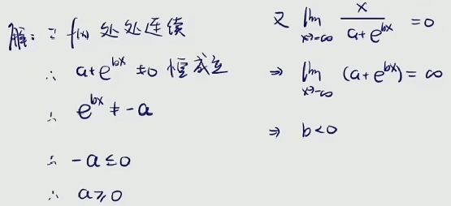

基本难度

-
- 极限存在，只要极限等于某个数就可以，不一定是


处处连续
- 你在一个区间上随便给我一个点
- 这个点处的极限值都跟这个点处的函数值相等的

- 连续不断的曲线
- 不管变化是剧烈的还是平缓的
-
-
- 在给定的区间内，取到一个确切的数x
- 那么是一个确切的数
- 常数去乘以一个无穷小量结果肯定是无穷小量
-
连续函数的性质

- 一个函数如果是分段函数的话
- 它在分段点处的连续性是保证不了的
- 它有可能是间断点

- a，两个基本初等函数的和应该也是处处连续的


- 极限都不存在何谈连续


-

- 答案选择B

-

-
- 处处连续说明在给定的区间内没有无定义的点
- 因而分母不可能取到0
- 因为一旦分母取到0则表明存在x是无定义的
- 
-

- 这是比较常见的题型
- 这是以极限形式给出的函数，它必须先得把极限求出来
- 这个极限的结果才作为我们函数的表达式
- 然后才讨论函数的间断点
- 注意，这个题目中n才是变量，x在这里可以看作一个参数
- 参数只要讨论对极限的影响，x在求极限的过程中它是不变的
- 说白了，n才是变化的


- 可以看见，求完之后函数是个分段函数

- 基本初等函数处处连续
- 那么，间断点这里只可能产生在分段点处
- 也就是说-1和1

- 最大值和最小值定理

- 注意，这一定得是闭区间
-
- 这里可以看到，趋于0时是无穷小，取不到最小值
- 不连续更加不行，说明在区间内可能存在有间断点
-
- 说白了，求一个函数在区间内，存在有x，使得函数等于0
-
- 说白了，求一个函数在区间内，存在有x，使得函数等于c
- 特别注意ξ的取值范围
- 零点定理是开区间，取不到两头
- 介值定理是闭区间，可以取到两头

- 所以说，平均值定理可以看作是介值定理的一个延伸
- 虽然说平均值定理在考纲之外，但有时候会是解题过程中的重要条件


- 求一个函数在区间内存在有x，使得函数值为0
- 很明显，零点定理
- 初等函数处处连续

- 两头异号，函数区间内连续
-

- 一种常见的处理方式，将函数都整理到一边
-
-
- 同样的，将函数都整理到一边
- 右边一头出现了等于0的情况，不能直接用零点定理
- 需要分类讨论一下

-


-
- 保序性
- 说白了，存在有函数值无限接近于极限值2
- 也就是说，x足够大时，函数值必定大于1
-